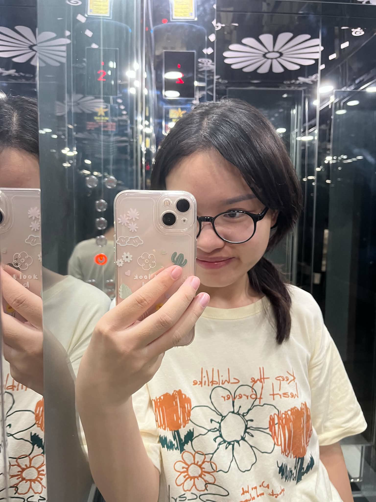
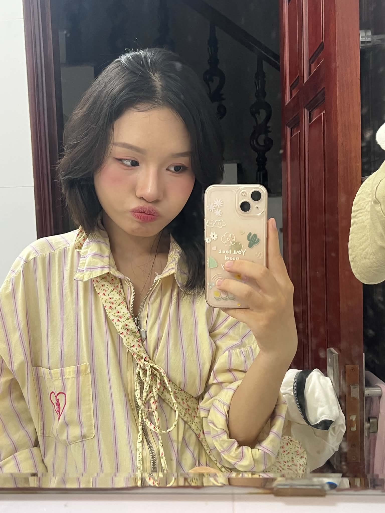
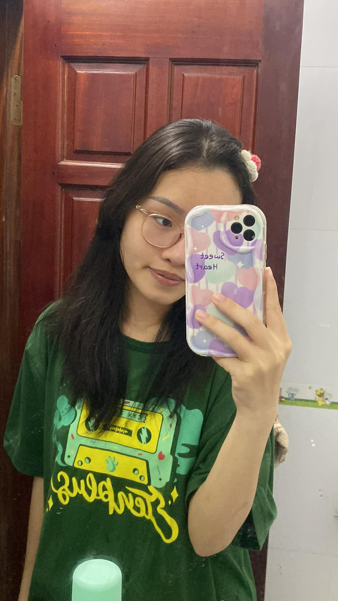
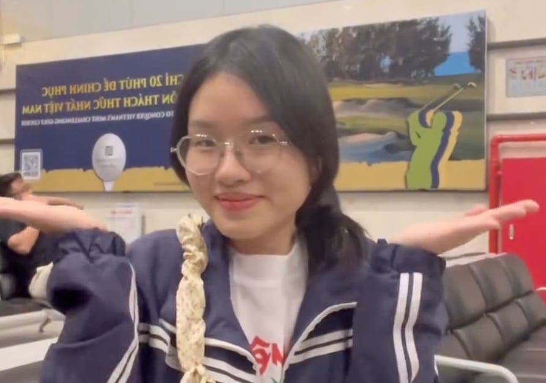
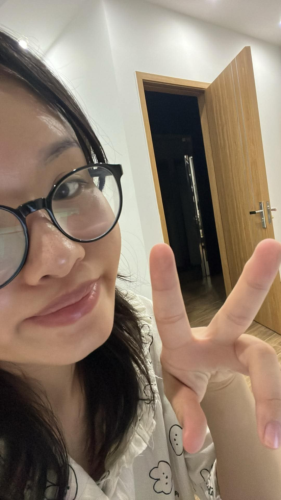

I never had a choice in loving you
It was pre-determined
Written in the stars
As if our soul has made a promise to find each other in every life
And I'd chose you
In a hundred million lifetimes
In a hundred million worlds
In any version of reality
I'd find you
And I'd chose you
Dear Yến,
Happy birthday, Yến — twenty-three already, but somehow you still look eighteen. First of all, thank you so much for spending the time with me through all of this. It has been a tough decision and a tough timing for me too, but hey — I have you by my side, and for me, that is all that matters. I know that I love you, and I will continue to. Hopefully one day I can hold you tight, and this time, I will never let you go.

So Yến is twenty-three now… Mon still remembers two years ago around this same time — when we first got together. What else can I say? Those were some of the best moments of my life. Things did not work out back then. You had to go to the UK, and Mon had to find a job, and life kept pulling in different directions.
But I have always believed we were still meant to be. It was never because we were not deeply in love that we broke up.

This time, I am missing your birthday again — but hey, I am coming back to hold you tight. I really do want to marry you, because with you, I am exceptional. Without you, I am just fine… or sometimes not even fine. I would love to be with you through the ups and downs, through everything again. But this time, things will be different.

“I can't think of any greater happiness than to be with you all the time.”
— Franz Kafka
We will be madly in love the way we used to be, but this time both of us will be more mature. If you love me, please think about us. Please just do not push me away. I want us to make the decision — not just you, or just me.

At the end of the day, I am still here — waiting to hug you from behind. Waiting for your love letter so I can kiss it, since I am so far away. I really wish this could be a handwritten letter, but hey… I do not think you could actually read my handwriting. It is notoriously bad.

I hope you know
you're the only person I've ever looked at and thought, please don't be temporary
loving you taught me that comfort can feel electric and still be calm
I never plan on you
but that's why I feel so right
Happy birthday. I love you from the bottom of my heart.
Mon